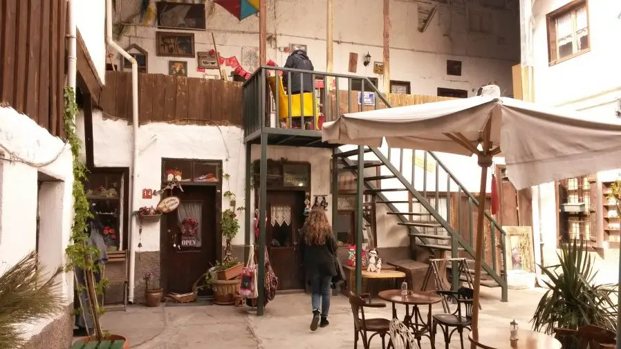

Description
Pilavoğlu Han Transportation Pilavoğlu Han, which is within walking distance from Samanpazarı, is a place where you can take a taxi from places such as Ulus center, Dikimevi metro, and Sıhhiye center in 5 minutes. Unfortunately, there is no public transport vehicle passing right in front of it. If you are traveling by private vehicle, you can use the municipality's car park on the side of the castle entrance. Map and Location Information Castle, Koyunpazari Sk. No:72, 06250 Altindag/Ankara
